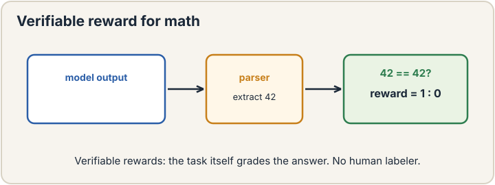
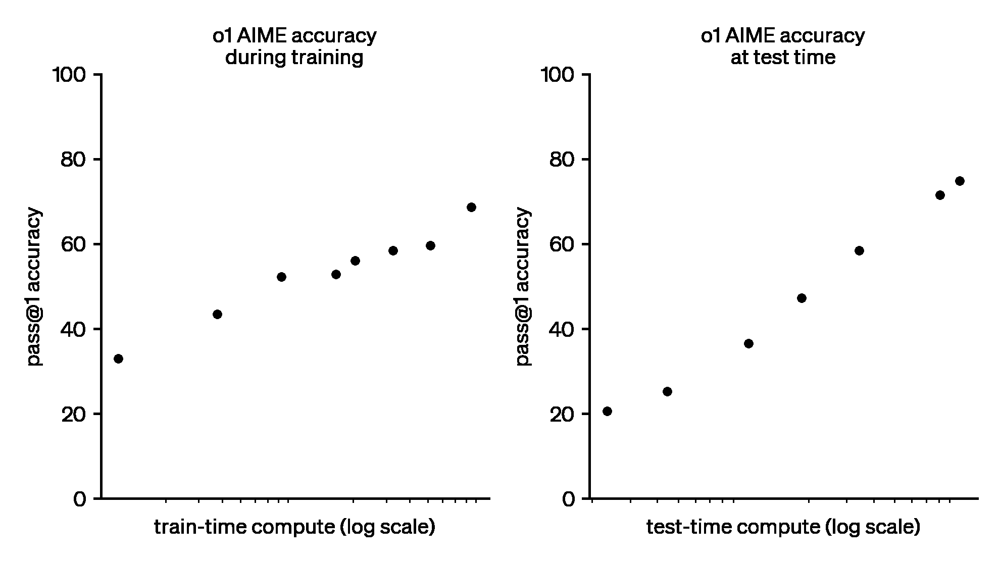

Lecture 17: RL for Language Models, PPO and Verifiable Rewards
Video blocked (ad-blocker or local file mode).
Watch on YouTubeVideo not loading? Watch on YouTube
Original lecture. Tengyu Ma extends policy gradient to PPO and applies RL to reasoning language models. [uncertain] The YouTube metadata title for this video is mislabeled; the title here follows the transcript.
How to read this lesson
This lesson has two levels. Level 1 (Core) contains what you need to understand everything that follows in CS229 and the courses that build on it. Level 2 (Deep) contains what you need for correct, interview-grade understanding. Read Level 1 straight through. Return to Level 2 when you want depth.
No prerequisites are assumed. Every term is defined at first use. Policy gradient and the MDP were defined in lecture 16; they are reused, not re-explained.
Level 1: From REINFORCE to PPO
Policy gradient is on-policy: every update needs fresh trajectories 01:23 ⏱01:23. Fresh LLM generations are expensive. PPO, proximal policy optimization 00:20 ⏱00:20, reuses samples across updates by correcting for the policy change.
The correction is the ratio r = pi_new(a|s) / pi_old(a|s): how much more likely the action is under the new policy. Multiply the old objective by r and stale samples approximate fresh ones. But ratios explode: an action the old policy rarely took gets a huge weight, and the update destabilizes.
The fix is clipping 44:30 ⏱44:30: cap the ratio at [1 - epsilon, 1 + epsilon]. The objective becomes min(r * A, clip(r) * A), where A is the advantage. Big policy moves are simply ignored. The name says it: keep the new policy proximal to the old one.

Sample waste. Vanilla policy gradient discards every trajectory after one update because the policy changed. PPO reuses trajectories with importance weighting, then clips the weights so stale samples cannot yank the policy far. More learning per sample, stable updates. That is the whole contribution: efficiency plus a guardrail. Ratios have heavy tails. One rare action under the old policy gives a gigantic weight and a gigantic gradient step. A single bad batch can destroy training. Clipping bounds the damage: the update ignores any incentive to move the policy beyond the trust region. It is pessimism as engineering.
Level 1: Advantages and baselines
Raw returns are noisy. A trajectory scores 10: was the action good, or the situation easy? The baseline 17:07 ⏱17:07 answers by subtracting the expected: how much better than usual was this outcome?
The advantage 36:25 ⏱36:25 is return minus baseline: A = R - b(s). Positive advantage: push these actions up. Negative: push them down. The baseline is often the value function V(s): the expected return from the state. Subtracting it removes luck but not signal, because the baseline does not depend on the action taken.
This is variance reduction, not bias introduction. The expected gradient is unchanged: the baseline’s contribution has expectation zero. What changes is the noise. Smaller noise means fewer samples per update, which is the currency PPO economizes.
Raw returns mix action quality with situational luck. A good action in a bad state scores low; a bad action in a good state scores high. The baseline, usually the state’s expected value, removes the situational part. What remains is the action’s contribution: the advantage. Same expected gradient, far less noise. Less noise means fewer trajectories per update. The value function V(s): the expected return from the state under the current policy. It is the best state-dependent predictor of the return, so it removes the most variance. Learned alongside the policy, usually by a second network head. Actor-critic methods are exactly this: an actor for the policy, a critic for the baseline.
Level 1: RL for reasoning models
Now the LLM application. The state is the token history. The action is the next token. The dynamics are deterministic and trivial: append the token. The reward comes only at the end of the trajectory: did the final answer match the ground truth?
For math problems the reward is verifiable 00:35 ⏱00:35 and binary 67:24 ⏱67:24: 1 if the extracted answer matches, 0 otherwise. No human labeler. No reward model to train. The task grades itself.

The engineering detail: force the format. Ask the model to wrap its
answer in tags, like
This trains chain of thought 56:36 ⏱56:36: long reasoning traces before the answer. The reward touches only the final answer, but the gradient flows back through every token of the trace. Traces that lead to correct answers get reinforced. Reasoning emerges from answer-level rewards, with no supervision of the thinking itself.

Three reasons. The reward is correct by construction: matching the answer is the task. It is cheap: a parser, not a human or a model. And it is dense enough at scale: with many problems, the binary signal separates good reasoning from bad across the dataset. No reward hacking through a learned judge, because there is no learned judge. The environment is the grader. Anything without a checkable answer. Open-ended writing, taste, helpfulness: no parser grades those. Those need human feedback or learned reward models, which bring their own hacking problems. Verifiable rewards own the checkable slice: math, code, puzzles. The field’s term is RLVR: reinforcement learning with verifiable rewards.
Level 1: Stability is the open problem
The lecture is candid. PPO’s theoretical justification is thin: why it works, and when, remains partly mysterious. Post-training stability is a general open issue 24:36 ⏱24:36. Making these runs stable “requires some magic.” The open-source community has no consensus on the best stabilization recipe. Frontier labs may know more.
This honesty is the point. RL post-training is the least settled part of the modern stack. SFT is reliable. Pre-training is reliable. RL is powerful and finicky. The course ends here deliberately: at the frontier, where the answers are not in yet.
It works reliably enough in practice and fails gracefully: clipping bounds the damage of bad updates. The alternatives are either less stable or more complex. Engineering often standardizes on the method with the best worst-case behavior, not the best theory. PPO’s worst case is a clipped, small step. That is a comforting failure mode. Reward shaping, KL penalties against the base model, careful batch construction, learning-rate schedules, early stopping on proxy metrics: a bundle of tricks with interacting effects. Change one and the run destabilizes. The magic is unprincipled but load-bearing. Documenting it honestly, as the lecture does, is more useful than pretending otherwise.
Level 2: The full post-training stack
Step back and the course’s modern arc is complete. Pre-training teaches the world: next-word prediction on the internet. SFT teaches conduct: instruction following from demonstrations. RL teaches reasoning: trial-and-error on verifiable rewards. Each stage fixes what the previous one cannot. Pre-training cannot follow instructions reliably. SFT cannot discover reasoning strategies. RL can, at the cost of stability.
The loss chip appears in every stage with new contents: cross-entropy, then masked cross-entropy on answers, then the PPO clipped objective. Same chip, three formulas. The course is one idea, specialized repeatedly: define wrongness, minimize it, in that order.
Level 2: RLVR and the reasoning frontier
The notes’ o1 figure shows the payoff: AIME accuracy rising with both train-time and test-time compute. Test-time scaling is the new axis: let the model think longer, score higher. RL with verifiable rewards is what taught the model to use the thinking time well.
The open questions are the course’s parting gift. Which tasks admit verifiable rewards? How far does test-time scaling go? What stabilizes post-training? The answers are being written now, in labs and in the open. The mathematics in this course is the vocabulary for reading them.
Recap: the whole lesson on one screen
Eight ideas carry this lecture. Read each card. Say the core sentence out loud. If you can, you own the lesson.
Importance ratio r corrects stale trajectories. Clipping bounds the correction. Proximal updates, efficient learning.
Key: min(rA, clip(r)A)
Cap r at 1 +/- epsilon. Ignore incentives to move far. Heavy-tailed ratios cannot destroy the run.
Key: bound the damage
Subtract the expected. Keep only better-than-expected. Same gradient in expectation, far less noise.
Key: A = R - b(s)
Binary reward: extracted answer matches truth. Parser, not judge.
Key: 1 or 0, no human
Reward touches only the final answer. Gradients flow through the whole trace. Good thinking gets reinforced.
Key: supervise answers, get reasoning
More thinking, higher AIME scores. RL taught the model to use the time. A new axis alongside training compute.
Key: think longer, score higher
Thin theory, finicky practice, no open-source consensus. Frontier labs may know more. Honest uncertainty.
Key: powerful but unsettled
Pre-train the world. SFT the conduct. RL the reasoning. Same chip, three formulas. The course arc, complete.
Key: each stage fixes the last
Official sources and further reading
Official: - Lecture 17 video: PPO 00:20 ⏱00:20, verifiable 00:35 ⏱00:35, on-policy sampling 01:23 ⏱01:23, baseline 17:07 ⏱17:07, stability 24:36 ⏱24:36, advantage 36:25 ⏱36:25, clipping 44:30 ⏱44:30, chain of thought 56:36 ⏱56:36, binary reward 67:24 ⏱67:24, answer extraction 67:50 ⏱67:50. - CS229 Spring 2026 official course notes: RL for LLMs chapter; the o1 scaling figure above is from it.
Further reading: - Schulman et al. (2017), “Proximal Policy Optimization Algorithms”: the PPO paper. - OpenAI (2024), “Learning to Reason with LLMs”: the o1 system card, for the test-time scaling results.
Caveats from these sources. The video’s YouTube metadata title is wrong; the content is PPO plus RL for LLMs per the transcript. PPO’s theory is thin by the lecturer’s own account; treat justifications as intuition. The o1 figure reports one benchmark family; generalization to other tasks varies. RLVR needs checkable tasks; it does not transfer to open-ended generation.
Connections to the other courses
- CS336: the full RLHF/RLVR pipeline is CS336’s post-training unit; this lecture is its foundation.
- CS224N: instruction tuning and preference data are the language-side inputs to this machinery.
- CS329H: reward modeling and preference aggregation are this lecture’s reward function, formalized.
PPO and RLVR cheatsheet. PPO: reuse samples via ratio r = pi_new/pi_old; clip r to [1-eps, 1+eps]; objective min(rA, clip(r)A); proximal updates. Advantage: A = R - b(s); baseline usually V(s); same expected gradient, less variance. LLM setup: state = history, action = next token, deterministic dynamics, reward at end. Verifiable: binary 1/0 on answer match;
Grade what you can check. Verifiable rewards work because the task is its own judge. Wherever answers are checkable, RL is cheap and honest. Where they are not, you are back to human judgment with all its costs.
Sources
- VIDEOLecture 17 video, Stanford Online YouTube
- NOTESOfficial subtitle transcript (en-US)
- NOTESCS229 Spring 2026 official course notes (local PDF)